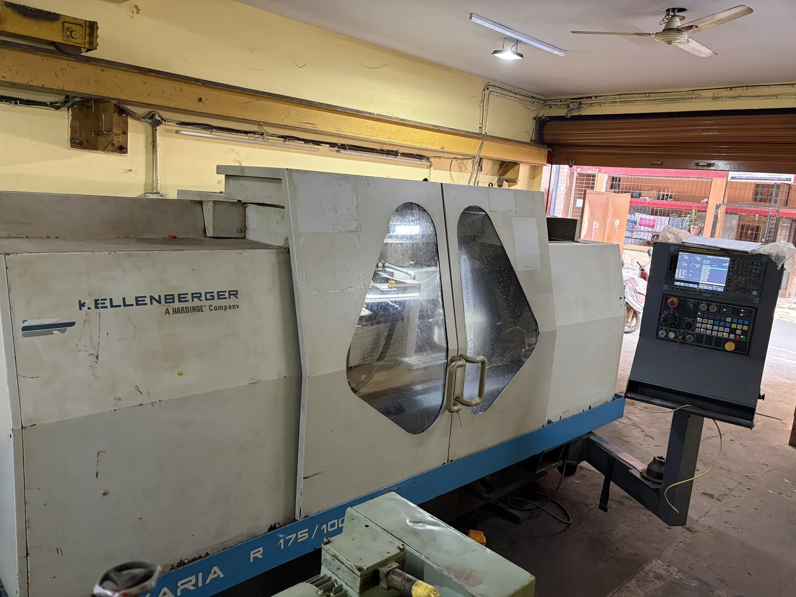
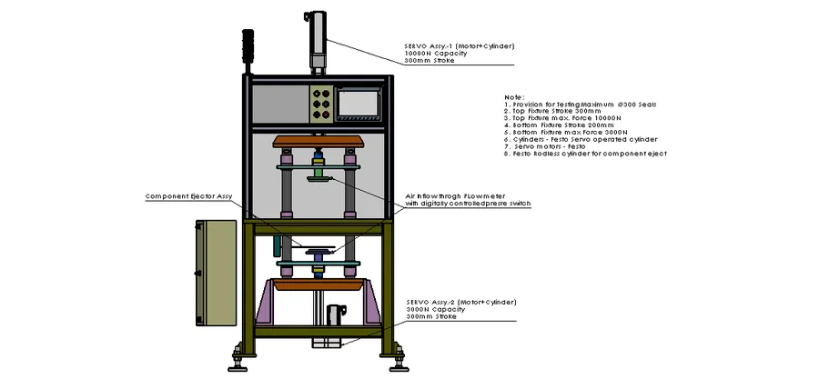
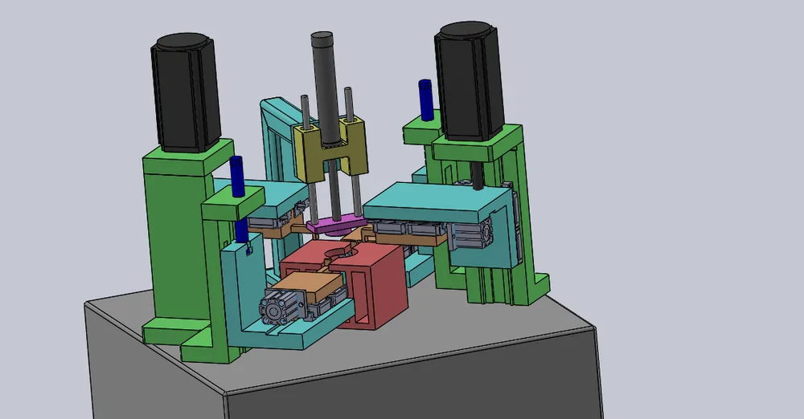
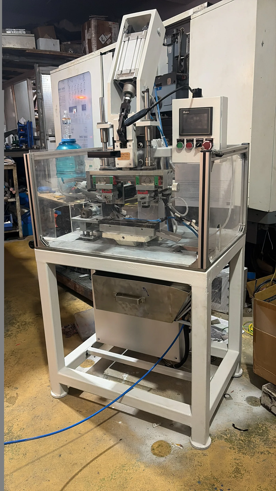
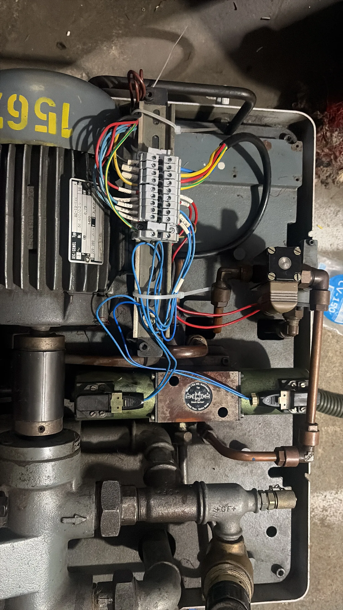

Peenya, Bengaluru · Since 2011
Machines designed around the work they need to do.
Special purpose machines, machine-tool retrofit and precision manufacturing brought together by one practical engineering team.

Selected machine / 01Four-servo seal slotting machine
VSK project archive
Special Purpose Machines · Reconditioning & Retrofit · Precision Components
Mechanical · Fluid Power · CNC / PLC / HMI · Servo · Electrical
Selected work
A small view into VSK’s machine archive.
Drag the gallery or use the mouse wheel. The final site would expand each machine into its own project story.




01/ 05